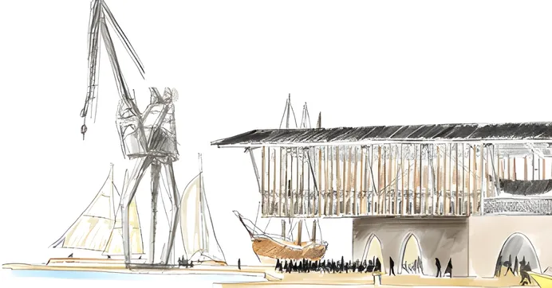
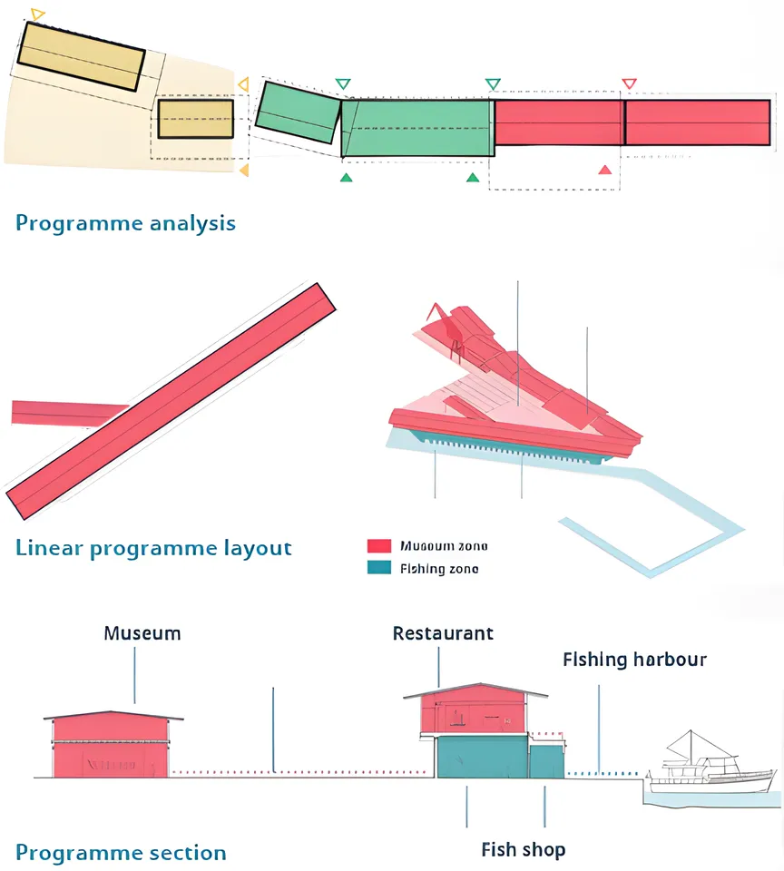
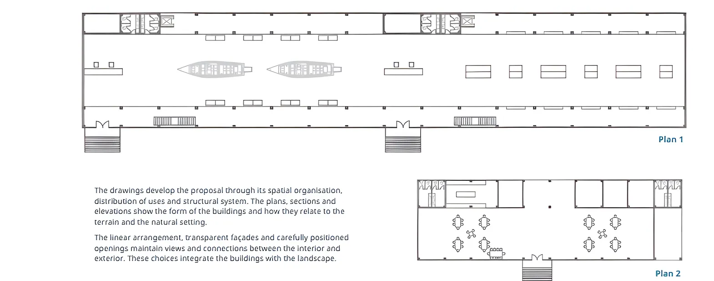
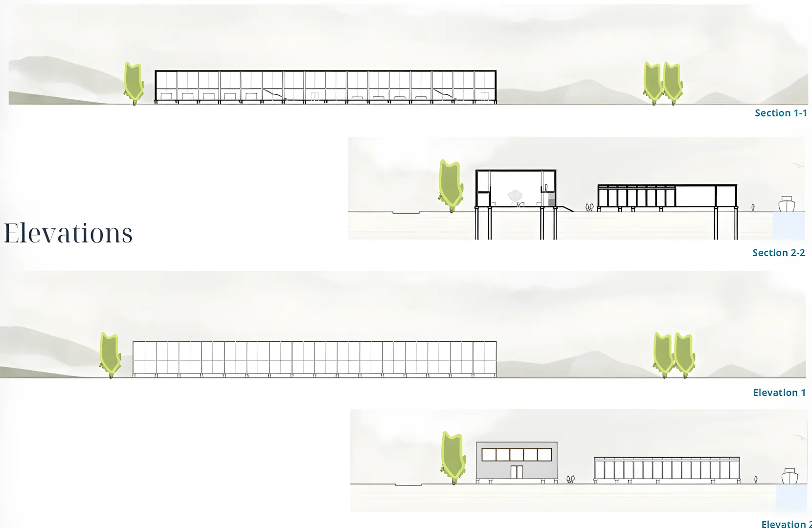
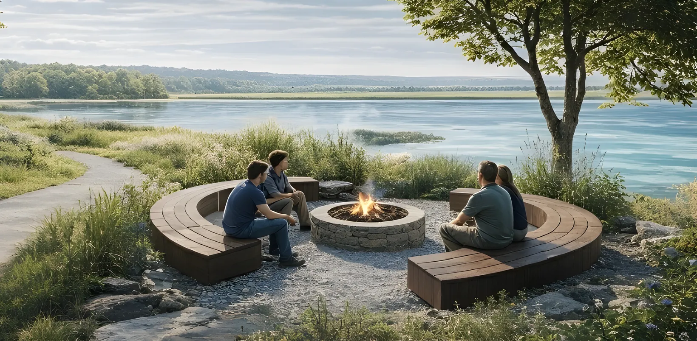
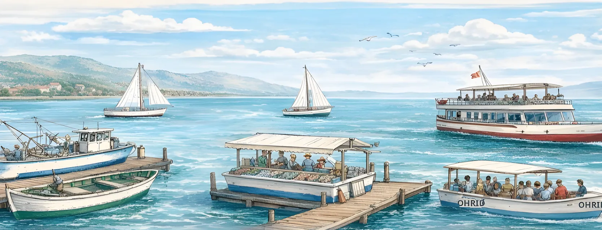

Quiet Sailing
A museum, a marina and a fish market strung along the shore of Lake Ohrid, built around the boats that still work there.

- Type
- Museum, marina and fish market
- Location
- Lake Ohrid
- Year
- 2025–26
- Status
- University studio, Urban Design 1
The site sits on the shore of Lake Ohrid. The design is one continuous route: paths and platforms follow the curve of the water and give you different ways to reach it.
The research came first: the lake’s fish, its traditional and working boats, and how locals and visitors use the shore. That shaped a linear plan, with the museum at one end and the fishing harbour, restaurant and fish shop at the other.
Timber, open frames and long views to the water carry the local fishing tradition into a public building. There is room for activity and for sitting quietly by the lake.









